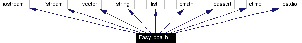
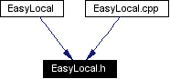

Main Page Modules Namespace List Class Hierarchy Alphabetical List Compound List File List Namespace Members Compound Members File Members Related Pages
EasyLocal.h File ReferenceClass declarations.
More...
#include <iostream>
#include <fstream>
#include <vector>
#include <string>
#include <list>
#include <cmath>
#include <cassert>
#include <ctime>
#include <cstdio>
Include dependency graph for EasyLocal.h: 
This graph shows which files directly or indirectly include this file: 
Go to the source code of this file. Namespaces
Defines
Functions
Variables
Detailed Description
Class declarations.
This file contains all the class declarations of the EasyLocal++ framework.
-
Author(s):
-
Andrea Schaerf (schaerf@uniud.it), Luca Di Gaspero (digasper@dimi.uniud.it)
-
Version:
-
0.1
-
Date:
-
15 Jun 2001
-
Note:
-
This version works both with MS Visual C++ and the GNU C++ compiler. Yet, it is extensively tested only with the GNU compiler.
Definition in file EasyLocal.h.
Define Documentation
|
|
This constant multiplies the value of the Violations function in the hierarchical formulation of the Cost function (i.e., CostFunction(s) = HARD_WEIGHT * Violations(s) + Objective(s)). -
Todo:
-
The use of the global HARD_WEIGHT is a rough solution, waiting for an idea of a general mechanism for managing cost function weights.
Definition at line 56 of file EasyLocal.h. |
|
|
The fvalue definition represent the codomain of the cost and of the objective function. For default it is set to double, but the user can provide its own definition. In this case, the user must define its own double-valued distance function between fvalues. -
Todo:
-
Find a more general mechanism.
Definition at line 71 of file EasyLocal.h. |
Function Documentation
Variable Documentation
|
|
This is the input file of the ExpSpec language interpreter
Definition at line 34 of file EasyLocal.h. |
|
|
This is the output file of the ExpSpec language interpreter
Definition at line 36 of file EasyLocal.h. |
|